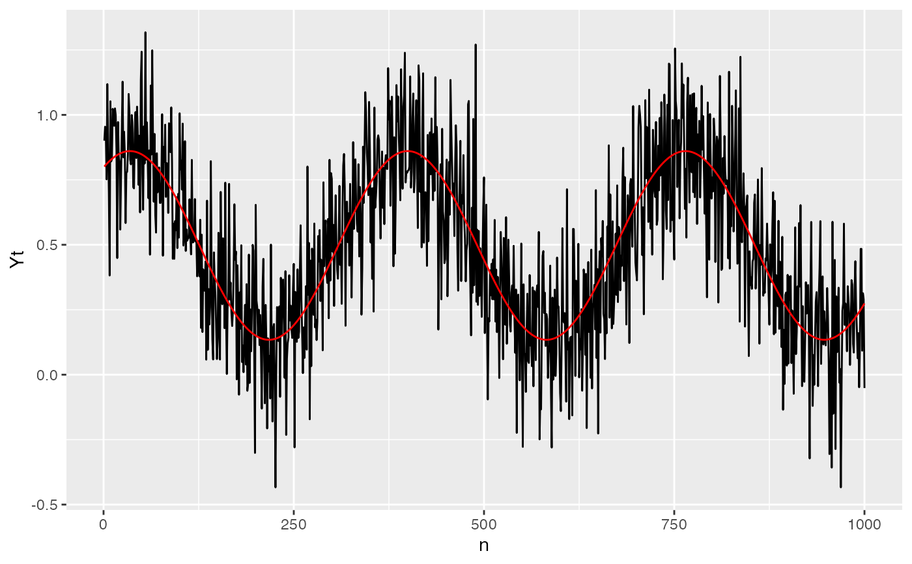

The seasonalModel class implements a seasonal regression model as a linear combination of sine and cosine functions.
This model is designed to capture periodic effects in time series data, particularly for applications involving seasonal trends.
The seasonal model is fitted using a specified formula, which allows for the inclusion of external regressors along with sine and cosine terms to model seasonal variations. The periodicity can be customized, and the model can be updated with new coefficients after the initial fit.
Version 1.0.3
extra_paramsList to contain custom extra parameters.
controlList to contain custom control parameters.
periodInteger vector, periodicities of the seasonality.
orderInteger vector, number of combinations of sines and cosines.
omegaInteger, periodicity computed as \(\frac{2 \pi}{\text{period}}\).
coefficientsNamed vector, model's parameters.
dcoefficientsNamed vector, model's parameters for the differential with respect to n.
std.errorsNamed vector, standard errors of the model's parameters.
coefs_namesNamed vector, names of the model's parameters.
tidyA tibble with estimated parameters and std. errors.
new()Initialize a seasonalModel object.
seasonalModel$new(formula, order = 1, period = 365)formulaformula, an object of class formula (or one that can be coerced to that class).
It is a symbolic description of the model to be fitted and can be used to include or exclude the intercept or external regressors in data.
orderInteger, number of combinations of sines and cosines.
periodInteger, seasonality period. The default is 365.
fit()Fit a seasonal model as a linear combination of sine and cosine functions and eventual external regressors specified in the formula. The external regressors used should have the same periodicity, i.e. not stochastic regressors are allowed.
predict()Predict method for the class seasonalModel.
update()Update the parameters.
# Sample time series
n <- 1000
eps <- rnorm(n, sd = 0.2)
Yt <- 0.5 + 0.2 * sin(2*base::pi/365*c(1:n)) + 0.3 * cos(2*base::pi/365*c(1:n)) + eps
# Initialize the model
sm <- seasonalModel$new("Yt ~ 1", 1, 365)
# Fit the model
data = data.frame(Yt = Yt, n = 1:1000)
sm$fit(data = data)
data$Yt_hat <- sm$predict(n = data$n)
# Fitted parameters
sm$coefficients
#> intercept sin_1_365 cos_1_365
#> 0.4974323 0.2044797 0.3000542
# Plot the fitted data
library(ggplot2)
ggplot()+
geom_line(data = data, aes(n, Yt))+
geom_line(data = data, aes(n, Yt_hat), color = "red")
